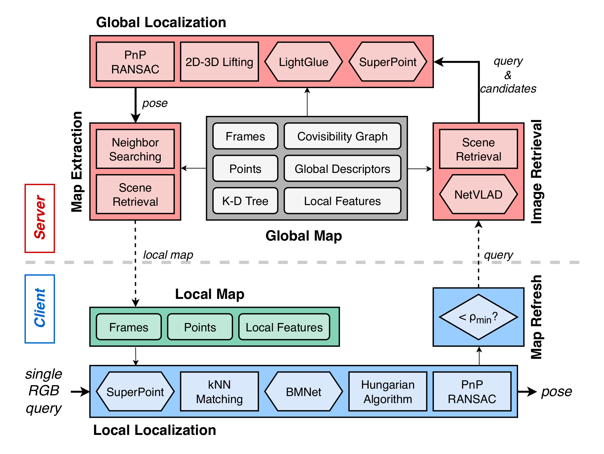
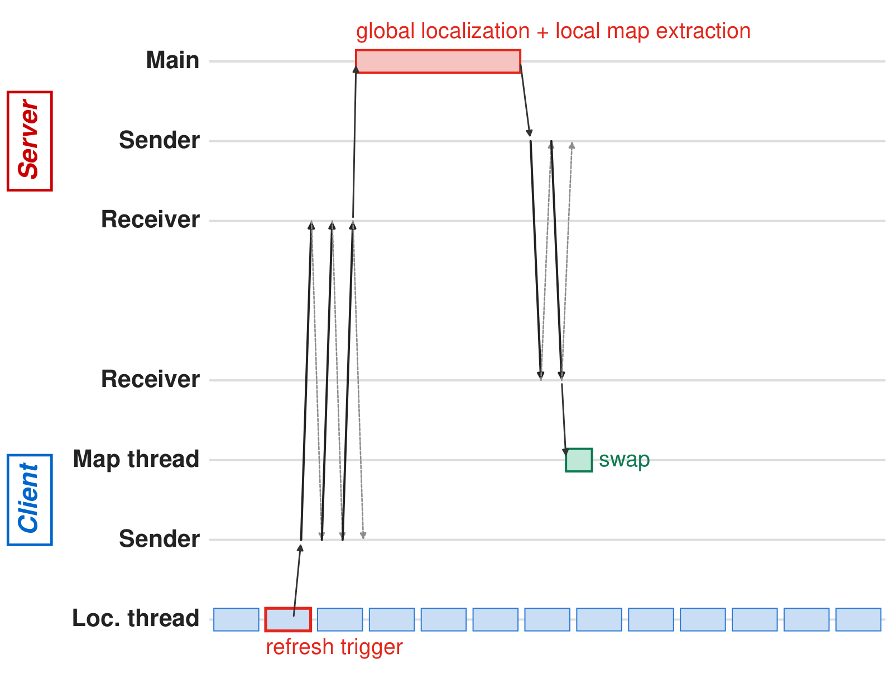
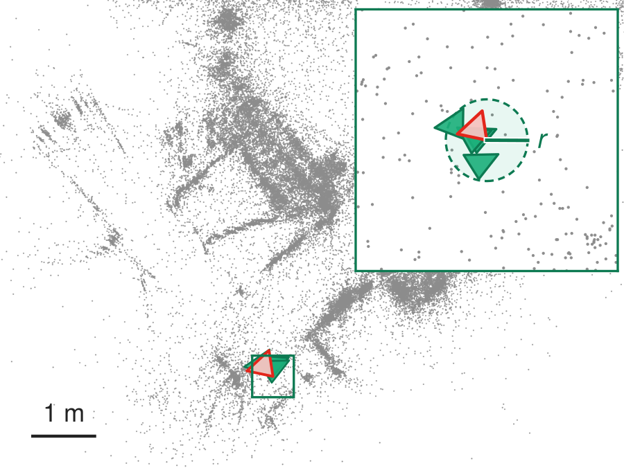
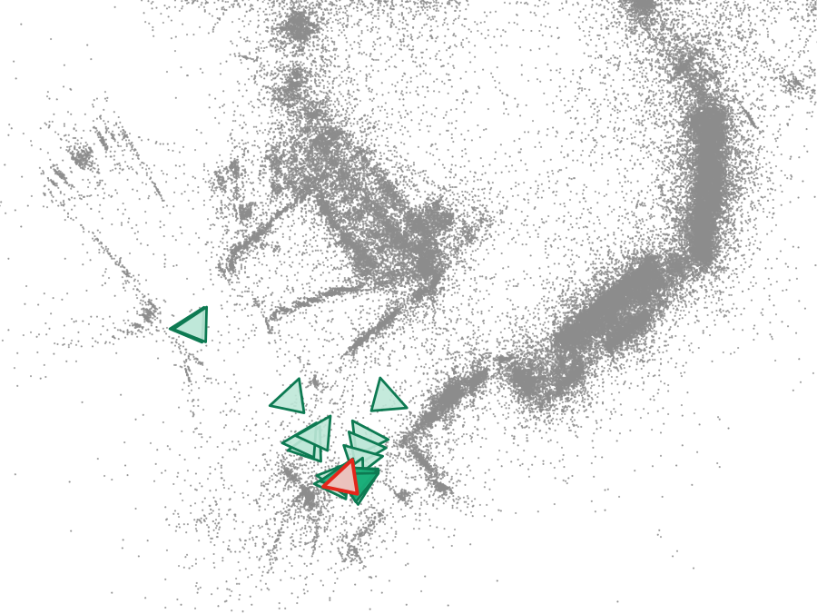
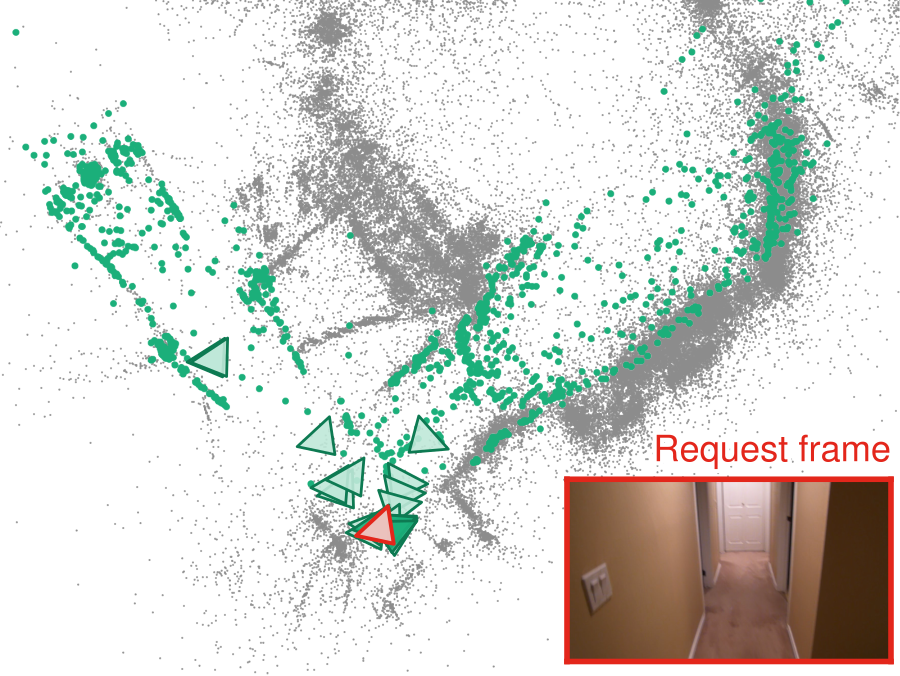
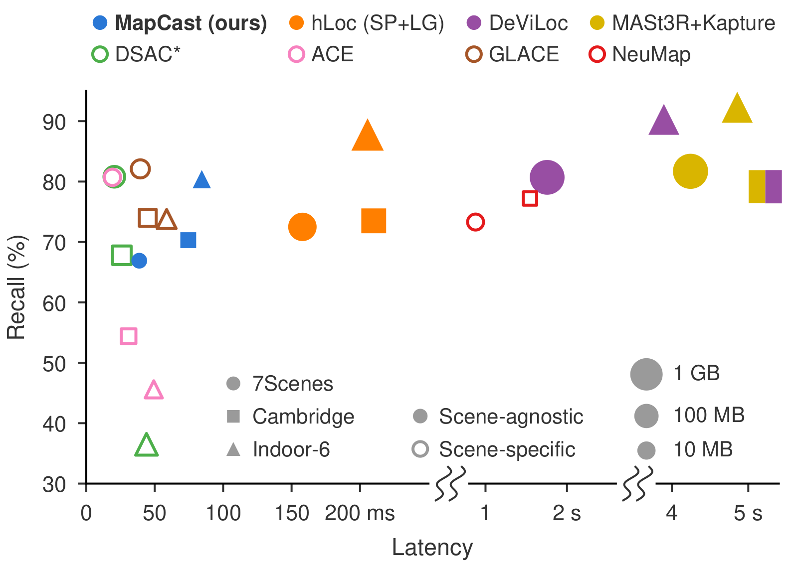
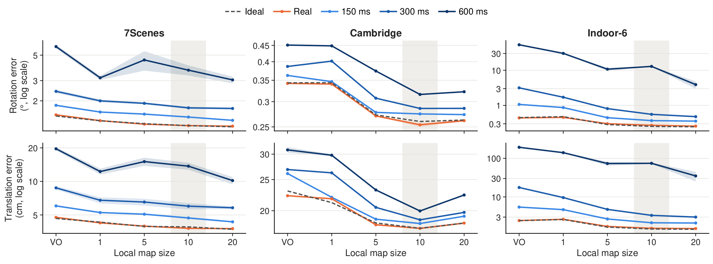
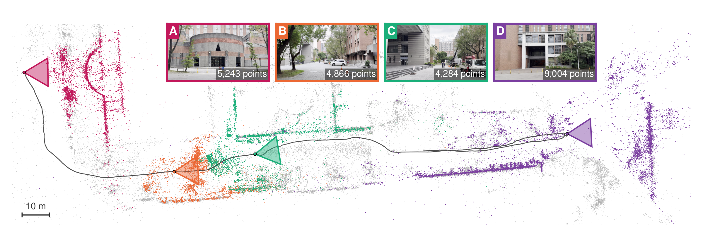

Averages per benchmark on 7Scenes, Cambridge Landmarks and Indoor-6, against full-map feature matching with hLoc on the same hardware. No network is trained for any scene.
For augmented reality and robotics, visual localization estimates a drift-free 6-DoF camera pose from a single frame against a prebuilt map. A client must localize every frame in real time, but accurate methods are too slow, hold the full map, or train a network per scene. Ideally, a client would need nothing but its camera frames.
We present MapCast, which streams the map to the client as its camera moves. The server localizes a frame on request and returns the local map around the camera. The client localizes every frame against this map. As the camera's view moves beyond it, the client requests the next map and keeps localizing until it arrives. Built by structure from motion with no per-scene training, the global map stays on the server, which can update or extend it without changing clients.
On 18 scenes from three benchmarks, the client averages 12 to 26 frames per second, 2.4 to 4.1 times faster than full-map feature matching with hLoc on the same hardware, holds a 36 to 112 times smaller map, and keeps comparable accuracy under real network latency.
A live run in a home office. A handheld camera is localized frame by frame as it moves. The camera (cyan) and its trajectory are drawn on the map, and its live frame is in the lower left.
A moving camera sees only the part of the map near its pose. MapCast keeps the global map on the server and sends the client only that part, one local map at a time.


The server finds database images near the estimated pose with a K-D tree, expands them by covisibility, and sends the points that these images observe. The map covers the camera's next views and leaves out what lies behind the walls.



MapCast localizes a frame in 39 to 84 ms with 3 to 8 MB of map. DSAC*, ACE and GLACE are faster but train a network for every scene. hLoc is more accurate but holds the full map and takes 158 to 210 ms per frame.

The client never stops to wait for a map, so a slow network shows up as an older local map rather than a missing pose. Over campus Wi-Fi, the error stays close to that of an ideal client that waits for every map. With extra round-trip time added by netem, the median translation error rises by at most 2.1 cm up to 300 ms. At 600 ms the error grows, the least for larger local maps.

A phone walk around a campus building. Each request receives only the part of the map around the camera, 4,284 to 9,004 points at the four positions below.

@misc{wang2026mapcast,
title = {MapCast: Spatially Aware Map Streaming for Real-Time Visual Localization},
author = {Wang, Tang-I and Chien, Shao-Yi},
year = {2026},
note = {Preprint},
}